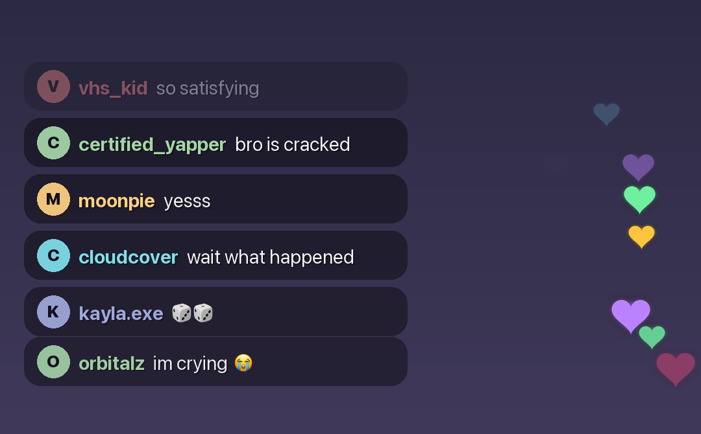

Generate a chat overlay that reacts to what actually happens in your video — then drop it on top, or burn it straight in.
In private testing.

Real output. Every message, username, colour and heart drawn by the renderer.
How it works
Mark the moments that matter — “0:08, I clear the whole board” — and say how chat should react. Or upload the video and let it find the moments itself.
Messages that reference your actual video, not generic filler. People reply to each other, with a realistic pause before they do.
A transparent file to composite yourself, or an MP4 with chat already burned in and your audio intact.
Why it looks real
Anyone can put text on a video. What gives fake chat away is rhythm — messages arriving at a metronome tick, replies landing faster than a human could type, the same line repeated until it reads as a bug.
Chat here arrives on a curve that drifts and surges the way real chat does. Your viewer count sets the pace, how many people talk, how long their messages are, and how much they repeat each other. Replies wait a few seconds, because people read before they type.
Pricing
Pro is metered in minutes of video, not generations — a 30-second clip costs a lot less than a ten-minute one, and you are charged accordingly.
Access
Stream Chat Generator is being tested with a small group first. If you make short-form video and want in, get in touch and I will send you a key.